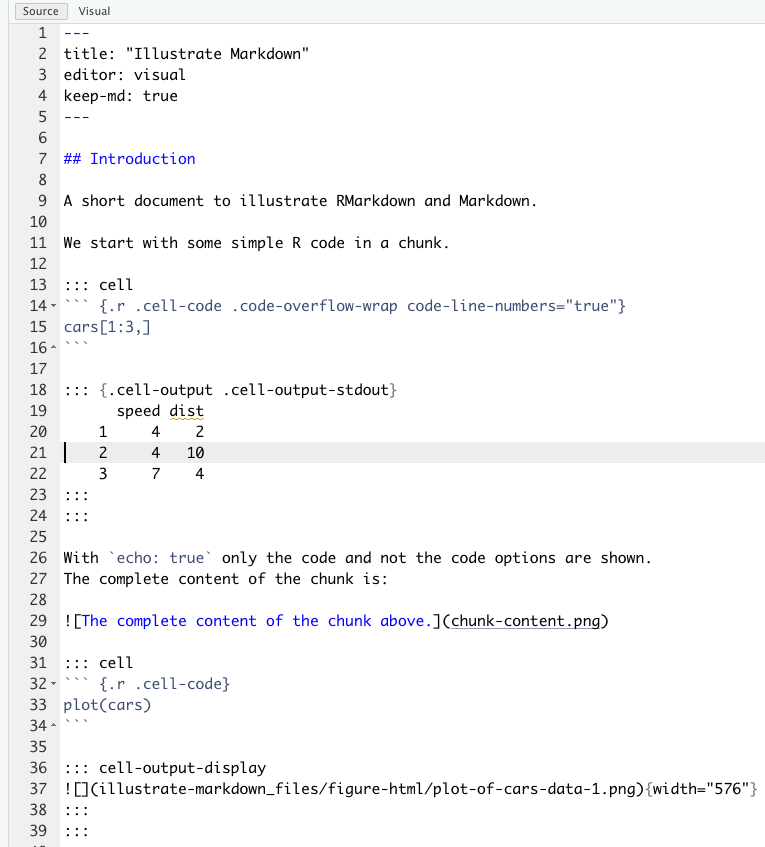

speed dist
1 4 2
2 4 10
3 7 4Illustrate Markdown
I have used format: pdf, keep-md: true, keep-tex: true in the YAML header to produce the images below.
Introduction
A short document to illustrate RMarkdown and Markdown.
We start with some simple R code in a chunk.
With echo: true only the code and not the code options are shown. The complete content of the chunk is:
plot(cars)plot(cars)The resulting Markdown
See Rmarkdown Cookbook section 5.8 for an explanation of the colons.

The MD file converted to HTML
The MD file converted to LaTeX

The MD file converted to PDF format
The whole process
Quarto Document -> MD file -> HTML file with CSS styling
Quarto Document -> MD file -> LaTeX file -> PDF file
We can also have:
Quarto Document -> MD file -> .docx file
.docx files are an XLM file that is kind of a generalisation of HTML